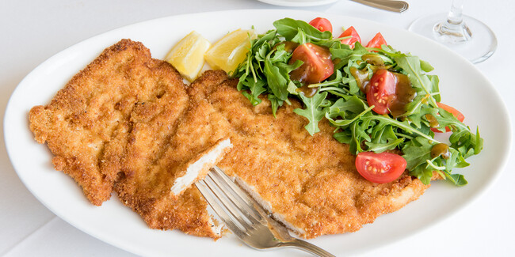

Milanese recipe

Description
Chicken Milanese is an Italian Classic that is easy to make and can be on your dinner table in less than 30 minutes. Add a side salad to this restaurant-quality dish, and you’ve got the perfect weeknight meal.
Ingredients
- Chicken breasts
- Panko breadcrumps
- Grated romano or parmesan cheese
- Italian parsley
- Onion powder
- Garlic powder
- Black pepper
- Table salt
- All-purpose flour
- Eggs
Steps
- Add the all-purpose flour, salt, and black pepper to a shallow bowl and whisk to combine.
- Add two eggs with ¼ cup of milk or water to a shallow bowl and whisk to combine the egg wash.
- Mix panko breadcrumbs, romano cheese, garlic powder, onion powder, black pepper, parsley, and lemon zest together in a shallow until well blended.
- Coat the chicken breasts with the seasoned flour. Then, place the piece of chicken in the egg mixture and finally in the breadcrumb mixture.
- Add ½ cup of vegetable oil (or olive oil) to a large skillet, then place it over medium-high heat.
- When the oil is hot, carefully place the breaded cutlets into the pan and saute until golden brown (about 3 minutes per side).
- Remove the cooked chicken breasts from the pan and place them on a wire rack to drain for one minute.
- Serve the Chicken Milanese with an arugula salad, tossed salad, or any of your favorite side dishes from green beans to french fries.